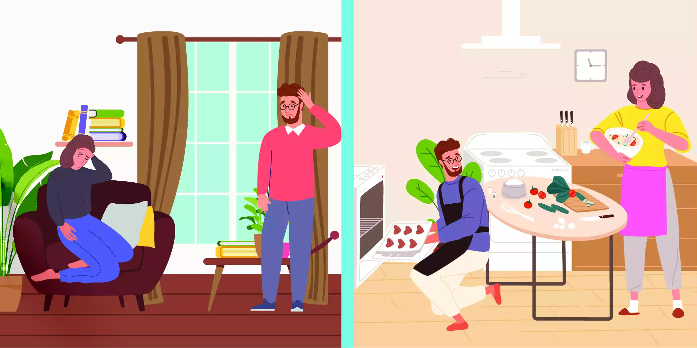

Mood disorders are one of the most common mental health disorders. So, it can be difficult to realize if someone has a mood disorder or is simply having a hard time controlling their emotions. We all have those moments when we can’t control our own emotions like sadness or happiness. But these moments usually don’t last long, unlike in cyclothymic disorder.
For example, when we achieve something we want, we can feel elated, hyperactive, and we might even let it get to our heads. But this doesn’t make us manic, even if these may be symptoms of an episode. After a while, we can calm ourselves down and there’s no harm done. There might be days when we feel low moods and want to be alone, too. But this doesn’t mean we’re depressed. It could just mean we’re tired and need to rest. Eventually, we get back up again and continue with our lives. So when do these mood switches become an actual problem?

What is Cyclothymic Disorder?
Cyclothymic disorder or cyclothymia is actually a milder form of bipolar disorder. It shifts between a few depressive symptoms and hypomanic symptoms with few periods of stable moods. We use the term “hypomanic” because their symptoms don’t fit a full-blown manic episode like in bipolar disorder. According to the DSM-5, it’s a “chronic, fluctuating mood disturbance” with shifts between hypomania and depression. Basically, cyclothymia has the symptoms of bipolar II disorder, but milder. This diagnosis is for people who have a hard time controlling their sad and elated moods that don’t make it into bipolar criteria just yet.
Does this make them less in need of help? Not at all! It simply means that people with a mild mood disorder have problems, too. These shifts in mood can get in the way of daily life for people who have them, especially since they have been there for a long time. Many therapists would consider this disorder when a patient comes in with behavioural problems. They might have marriage troubles, be unable to work properly or have a substance abuse disorder.
Cyclothymic Disorder vs Bipolar
Cyclothymia is very similar to Bipolar Disorder (BD). The main difference is that it’s less severe than bipolar II disorder. Mood swing shifts in this disorder are also more frequent than in BD. But cyclothymia still has harmful outcomes from chronic mood shifts even if they are not full-blown episodes.
A person with BD experiences moods swings between manic and depressed. Both moods fit into their own categories in the DSM-5 and can happen at the same time. These people would normally seek help for both because of how severe their symptoms are. Their episodes are intense but they might not be as often as those in cyclothymia. Sometimes they can have more periods of normal mood.
A person with Cyclothymia may go much of their life not diagnosed because their symptoms are not that severe. But they will notice that their emotions are still harder to control compared to others. They would also have been experiencing these mood swings for a long time with few periods of normal mood in between. While their moods may not be as extreme, if not treated early, they can become BD.
Signs and Symptoms of Cyclothymic Disorder
People with cyclothymia have shifted between high and low mood, but not enough to count as bipolar disorder. Sometimes there are no periods of normal moods and they just shift between high and low moods. Low moods are more common and that’s when people seek help. But there is such a thing as a mixed episode in this disorder, like in BD. A mixed episode can be a confusing experience, where the depressive phase is combined with hypomania. This means that while they’re in a depressive episode, they have the same energy as a manic one. Mixed episodes can be dangerous because these are the times when suicide attempts occur more often.
People with cyclothymia can have an extremely high mood when they are successful at work/school, in good weather, or when taking drugs or alcohol. They can have low moods when relationships fail, changes in season, and moderately stressful situations. These sound normal at first glance. But note that these reactions are usually out of proportion of the reasons when it comes to cyclothymia. This makes it important to identify the episodes they experience so that you know when you or someone you know should get help. Hypomania, the feeling of extreme happiness, includes:
- Being easily irritable
- Reckless and risky actions
- Too much optimism
- Lack of control and poor judgment
- Talking a lot more than usual
- High sex drive
- Inattentive
- Overconfident and high self-esteem
- Lack of sleep
- Too many extra movements
Meanwhile, their depressive symptoms include:
- Eating more or less than usual
- Weight changes
- Feeling tired
- Not enjoying things you used to enjoy like sex or hobbies
- Being tense much of the time
- Feeling like crying often
- Feeling guilt and worthlessness
- Suicidal thoughts
Causes of Cyclothymic Disorder
Biological
Studies show that there’s a biological link between family members with this disorder and other mood disorders. More than any other mental disorder, having relatives with bipolar I disorder seems to have the highest risk for developing cyclothymia. This implies that there might be a genetic link. But this doesn’t mean that you might have a mood disorder just because you have relatives with mood problems, too. There are other factors that can help cause it. So we need to look out for those who might be at risk for developing it.
It was also studied that cyclothymia has similar pathways as bipolar II disorder because the use of Lithium as a treatment is effective in both disorders. Lithium works by decreasing the chemicals in the brain that are high in manic episodes. This implies that the manic episodes in both disorders have the same pathway in the body. In people without disorders, these chemicals in the brain are balanced. So they can control their emotions normally. But those with mood disorders have an imbalance of these chemicals. So they usually need meds to control their emotions and reach a more normal level of functioning.
Psychosocial
Many theories about the disorder come from the ideas of trauma. Traumatic events can trigger episodes because of the tension they cause. According to Freud, it comes from the ego trying to overcome the superego. For example, a hypomanic person acts overconfident to cover up their real feelings of depression. This is actually a type of denial that acts as a coping mechanism to protect a person from feeling low moods. It could be that the episode was due to their avoidance of acknowledging their problems. So they try to resolve these feelings by being productive and reckless.
Hypomanic episodes are more commonly triggered by the loss of an important relationship. It can be as a friend, romantic partner, or family member. These episodes make them think that they are happy, productive people. But this is a way to deny their feelings that their aggression or destructiveness was the cause of their relationship breaking. Other causes and triggers for cyclothymic symptoms can be traumatic events, severe illness, and long stressful periods. Whatever the trigger may be, the extreme shift in moods could be their way to cope with stress.
How is Cyclothymic Disorder diagnosed?
This diagnosis is given after a full medical history is taken. This would usually be done with a psychiatrist. There are no diagnostic tests to say someone has cyclothymia. But there are tests that can be done to rule out organic causes. This would include studying your blood, metabolic profile, thyroid tests, Vitamin B12, urine tests, and brain scans.
Based on the client’s history and mental status, the DSM-5 criteria states that the symptoms must include:
- Many episodes of hypomania and depression for at least 2 years
- Stable moods should be less than 2 months
- Symptoms are not better explained by another disorder or substance
- Symptoms must affect daily life
The last criteria are important in all disorders because it means that a problem exists that needs intervention. The disorder has to be bad enough to affect a person’s work, school, relationships, and home life.
Cyclothymia and other mental disorders
Substance Abuse Disorder
Many people with cyclothymia also have problems with alcohol and substance abuse. This can be a result of using harmful drugs to treat their symptoms or give them more stimulation. The latter is more common during mania when decision-making is weaker and they’re more impulsive. It’s also possible the mood swings are a result of illegal drug use or they’re worsened by drug use. Thus, they may be asked to take drug tests and questioned about drug intake when they seek help. This is in no way to get them into legal trouble. But it is a way to help them with any factor that might worsen their symptoms.
Other Mood Disorders
Cyclothymia is similar to other mood disorders, except it is milder and chronic. Luckily, there are different tests and tools that therapists can use to set these disorders apart. These include checklists, inventories, and tests that would help find out what problems the client has. Mood disorders share the same pathways as well. Which explains why the medications used for this disorder and mood disorders are similar. Both are related to imbalances in brain chemicals that are meant to help control mood. But instead, these brain chemicals seem to run wild, making it hard for the person to control even if they wanted to.
Attention Deficit Hyperactive Disorder (ADHD)
It can be difficult to tell ADHD apart from cyclothymia, especially in kids and teens. During manic episodes and in people with ADHD, people are prone to being impulsive and making rash decisions. They both also have a hard time paying attention and staying put. The big difference between the two is that a trial of stimulant meds can be given. Those with ADHD will respond well to stimulants while cyclothymia does not.
Physical diseases
Many physical problems can cause symptoms similar to cyclothymia. This includes hormonal diseases, lack of vitamins, head trauma, and infections. It becomes important to rule this out first because treating these diseases are very different. Luckily, there are lab tests too if these diseases could be what’s causing the symptoms.
Treatment for Cyclothymic Disorder
Psychosocial Therapy
Therapy for cyclothymia is meant to make you aware of your disorder. After realizing the causes, it focuses on improving your coping mechanisms. Many clients seek help when they are in the depressive phase. But others seek help because of the damage they do during manic episodes. It is during these moods that you might be at risk for making bad decisions like unsafe sex, suicide attempts, and impulse buying. Problems from hypomanic phases can range from work to family, to friends. To avoid these issues, the main goals of therapy would be:
- Stopping the disorder from becoming BD
- Lessening symptoms
- Stopping symptoms from happening again
Since this disorder is chronic, you would usually need treatment for the rest of your life. But symptoms can decrease and stabilize over time. So the need for therapy will be less often. Despite that, it’s important to remember what happens in the sessions and the goals set. Otherwise, you’ll be at risk for relapse and starting from square one. It won’t always be a hard process, though. There are family and group sessions that can help both you and your friends and family.
The most commonly used therapy is Cognitive Behavior Therapy (CBT). This can be done with just you but it can also have group sessions. The length and how often these sessions are will depend on you and your symptoms. If your symptoms are relatively harmful, the sessions may have to be longer and more often than others. This therapy can help with:
- Building healthy routines
- Making strategies for better coping mechanisms
- Improving self-esteem
Psychoeducation
Education is very important for this disorder because understanding what you have can help with sticking to treatment plans and goals. You can’t get better without accepting that you have a problem. It also becomes harder to stick to the plan if you don’t understand how your disorder works and its causes. Making goals and planning strategies is a team effort between the client and therapist. You can’t make plans with your therapist without knowing what’s going on.
This part focuses on making clients think more about their condition. You might be asked to reflect on your feelings and past to figure out the root of your problems. It is through thinking of strategies that you can learn to control your emotions better to avoid any episodes.
Medication
The first-line treatment for this disorder is mood stabilizers and anti-manic drugs. A commonly used drug is Lithium. This drug acts on the chemical of the brain called “glutamate” by making it less available to the body. This chemical is elevated during manic episodes. Lithium also increases GABA activity in the body as well. This chemical is related to controlling moods in the brain to make sure that our emotions don’t go overboard.
Antimanic drugs include carbamazepine and valproate which was also used for seizures. In this case, these drugs are used to control hypomanic episodes by regulating brain chemicals. Antidepressant drugs should be used with caution because they can cause manic episodes. Around 40-50% of patients using these drugs for their disorder experience manic episodes often because they’re taking antidepressants.
You might need to take meds for a long while for this disorder. But if you can become stable for a long span of time, there’s a good chance you may not need them or need them less often. That decision will rely on you and your doctor. It’s very important to stick to what your doctor says when taking your meds. Otherwise, treatment won’t be effective and you will likely relapse. Don’t expect immediate results after one session and taking meds. Commitment and discipline can make all the difference in getting better.
How can a Mental Health Professional help?
Cyclothymia is both a mental and a physical problem. Many people with this disorder see a psychiatrist because they’re licensed doctors who can prescribe drugs to control mood swings. This is also important because the first-line treatment for this disorder is medicine. But when paired with therapy, the treatment would be more effective. This is also because not everyone with cyclothymia will improve with drugs alone. Treatment needs to tackle both the biological and psychosocial causes of the disorder.
A professional can check your symptoms to see which mood disorder you fit under. Tests and psychological tools can only be accurately read by professionals. While mood disorders have some similar features, different ones have different approaches to therapy and even first-line drugs. At the end of the day, a therapist or doctor should tailor your treatment to your needs and goals.
Mood disorders often need a multidisciplinary team to work with you because there are a lot of factors that play a role in causing these disorders. The team can include primary care doctors, psychiatrists, psychologists, social workers, and even friends and family. Therapists can also refer you to communities or support groups with people you can relate to, usually those with the same disorder or similar ones. Sources of support improve the outcomes of treatment by motivating you to follow your treatment plan.
Prognosis
This disorder usually happens early in life. Young patients are usually come in with mood or behaviour problems, thinking they may have depression or bipolar disorder. If the symptoms are recognized early, you can stop the disorder from worsening. Some people have it for their life while others say it goes away later on. What’s important is to get a check-up and treatment before it develops into something worse. All these interventions are important because if the symptoms get worse, people are more prone to drug abuse, suicide attempts, and developing other mental disorders. The sooner the client can fix their behaviour issues, the better for them and all those involved.